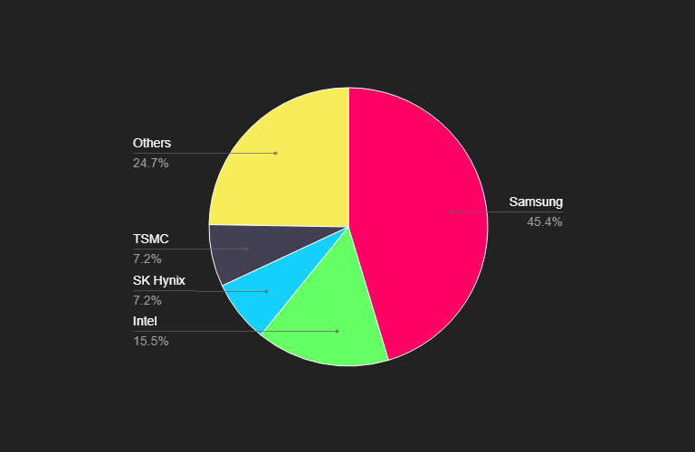

<!DOCTYPE html>
<html lang="en">
  <head>
    <meta charset="utf-8" />
    <meta name="viewport" content="width=device-width, initial-scale=1.0, maximum-scale=1.0, user-scalable=no" />

    <title></title>
    <link rel="stylesheet" href="dist/reveal.css" />
    <link rel="stylesheet" href="dist/theme/blood.css" id="theme" />
    <link rel="stylesheet" href="plugin/highlight/zenburn.css" />
	<link rel="stylesheet" href="css/layout.css" />
	<link rel="stylesheet" href="plugin/customcontrols/style.css">


    <script defer src="dist/fontawesome/all.min.js"></script>

	<script type="text/javascript">
		var forgetPop = true;
		function onPopState(event) {
			if(forgetPop){
				forgetPop = false;
			} else {
				parent.postMessage(event.target.location.href, "app://obsidian.md");
			}
        }
		window.onpopstate = onPopState;
		window.onmessage = event => {
			if(event.data == "reload"){
				window.document.location.reload();
			}
			forgetPop = true;
		}

		function fitElements(){
			const itemsToFit = document.getElementsByClassName('fitText');
			for (const item in itemsToFit) {
				if (Object.hasOwnProperty.call(itemsToFit, item)) {
					var element = itemsToFit[item];
					fitElement(element,1, 1000);
					element.classList.remove('fitText');
				}
			}
		}

		function fitElement(element, start, end){

			let size = (end + start) / 2;
			element.style.fontSize = `${size}px`;

			if(Math.abs(start - end) < 1){
				while(element.scrollHeight > element.offsetHeight){
					size--;
					element.style.fontSize = `${size}px`;
				}
				return;
			}

			if(element.scrollHeight > element.offsetHeight){
				fitElement(element, start, size);
			} else {
				fitElement(element, size, end);
			}		
		}


		document.onreadystatechange = () => {
			fitElements();
			if (document.readyState === 'complete') {
				if (window.location.href.indexOf("?export") != -1){
					parent.postMessage(event.target.location.href, "app://obsidian.md");
				}
				if (window.location.href.indexOf("print-pdf") != -1){
					let stateCheck = setInterval(() => {
						clearInterval(stateCheck);
						window.print();
					}, 250);
				}
			}
	};


        </script>
  </head>
  <body>
    <div class="reveal">
      <div class="slides"><section  data-markdown><script type="text/template"><!-- .slide: class="drop" -->
<div class="" style="position: absolute; left: 0px; top: 0px; height: 700px; width: 960px; min-height: 700px; display: flex; flex-direction: column; align-items: center; justify-content: center" absolute="true">

<style>
	.header{
		color: #057674;
		text-shadow: rgba(5, 118, 116, .3) 1px 0 10px;
	};
</style>
#### **The Global Microchip Shortage** <!-- .element: class="header" -->

</div></script></section><section  data-markdown><script type="text/template"><!-- .slide: class="drop" -->
<div class="" style="position: absolute; left: 0px; top: 0px; height: 700px; width: 960px; min-height: 700px; display: flex; flex-direction: column; align-items: center; justify-content: center" absolute="true">

#### **What is a Microchip?** <!-- .element: class="header" -->


- A Microchip is a thin slice of semiconducting material that contains microscopic digital computing components.
- They are used in virtually every modern computer.
</div></script></section><section  data-markdown><script type="text/template"><!-- .slide: class="drop" -->
<div class="" style="position: absolute; left: 0px; top: 0px; height: 700px; width: 960px; min-height: 700px; display: flex; flex-direction: column; align-items: center; justify-content: center" absolute="true">

#### **Devices that use microchips** <!-- .element: class="header" -->
<split left="1" right="2" no-margin>


</split>
</div></script></section><section  data-markdown><script type="text/template"><!-- .slide: class="drop" -->
<div class="" style="position: absolute; left: 0px; top: 0px; height: 700px; width: 960px; min-height: 700px; display: flex; flex-direction: column; align-items: center; justify-content: center" absolute="true">

#### **Causes of the shortage** <!-- .element: class="header" -->


- Increased demand for electronic devices
- Monopolization of advanced chip production
- Destruction of critical manufacturing infrastructure
</div>

<aside class="notes"><ul>
<li>Graph<ul>
<li>Data from the Bureau of Economic Analysis was used to divide United States manufacturing industries into two distinct groups in order to evaluate the price dynamics for industries that rely on semiconductors and industries that do not.</li>
</ul>
</li>
</ul>
</aside></script></section><section  data-markdown><script type="text/template"><!-- .slide: class="drop" -->
<div class="" style="position: absolute; left: 0px; top: 0px; height: 700px; width: 960px; min-height: 700px; display: flex; flex-direction: column; align-items: center; justify-content: center" absolute="true">

#### **Increased Demand for Electronic Devices** <!-- .element: class="header" -->


- Covid restrictions
- Cryptocurrency mining
- Entertainment
- Modern military technology
</div>

<aside class="notes"><ul>
<li>Covid restrictions that were put into effect by nearly every major world government during the Covid-19 pandemic limited our ability to see each other in person, and so the internet was used to facilitate education, work, and governing, thus increasing the global need for devices that require microchips to produce.</li>
<li>Cryptocurrency mining requires massive amounts of processing power in order to be a lucrative business venture, so miners were buying up graphics cards, computer processors, and even gaming consoles so that they could integrate them into their data processing farms. These computational components use large amounts of microchips when compared with other products like vehicles or even certain medical devices, so this greatly exacerbated the issue.</li>
<li>Entertainment in the modern age relies heavily on technologies that require large amounts of data, and in turn large amounts of microchips to process that data. During the pandemic demand for these types of entertainment devices was even higher than it is now because everyone was bored at home.</li>
<li>The United States military also relies heavily on microchips in order to construct and maintain advanced defense technologies.</li>
</ul>
</aside></script></section><section  data-markdown><script type="text/template"><!-- .slide: class="drop" -->
<div class="" style="position: absolute; left: 0px; top: 0px; height: 700px; width: 960px; min-height: 700px; display: flex; flex-direction: column; align-items: center; justify-content: center" absolute="true">

#### **Monopolization of Advanced Chip Production** <!-- .element: class="header" -->


Four companies hold 75% of the semiconductor market.
</div>

<aside class="notes"><ul>
<li>Globally superconductors are mostly produced by eastern Asian countries, the top two of which are China and Taiwan. Currently tensions are high between these two countries and multiple officials in our military are concerned that China is about to invade the island, which would completely upend Taiwan&#39;s ability to keep producing a large portion of the world&#39;s superconductors.</li>
</ul>
</aside></script></section><section  data-markdown><script type="text/template"><!-- .slide: class="drop" -->
<div class="" style="position: absolute; left: 0px; top: 0px; height: 700px; width: 960px; min-height: 700px; display: flex; flex-direction: column; align-items: center; justify-content: center" absolute="true">

#### **Destruction of Critical Infrastructure** <!-- .element: class="header" -->
- July 2020 - A portion of a Nittobo Factory in Japan burns down.
- October 2020 - AKM Factory in Japan burns down.
- February 2021 - Winter storm Uri hit Texas and damaged many different superconductor production facilities.
</div>

<aside class="notes"><ul>
<li>Nittobo was the leading producer of Printed Circuit Boards, which is a major component of microchips.</li>
<li>AKM is a global supplier of microchips, so when their factory burned down it disrupted the supply chain even more.</li>
<li>In Texas 65% of all utilities are privately owned due to when Texas deregulated it&#39;s electricity market in 2002. This lack of regulation led to a complete and widespread failure of their electrical grid when an unexpected winter storm hit the state in 2021, which not only damaged superconductor production but also caused the deaths of nearly a thousand people.</li>
</ul>
</aside></script></section><section  data-markdown><script type="text/template"><!-- .slide: class="drop" -->
<div class="" style="position: absolute; left: 0px; top: 0px; height: 700px; width: 960px; min-height: 700px; display: flex; flex-direction: column; align-items: center; justify-content: center" absolute="true">

#### **Solutions** <!-- .element: class="header" -->


- The CHIPS and Science Act (US)
- The Chips Act (European Union)
</div>

<aside class="notes"><ul>
<li>The Biden administration and congress worked together to pass the CHIPS and Science Act, which provides billions in subsidies for companies who will produce microchips in the United States, with the main goal being economic independence from microchip manufacturers in other countries. Since it was signed more than 35 companies have announced plans to start manufacturing microchips in the United States.</li>
<li>The European union has passed their own version of the chips act where they have allocated 43 billion euros.</li>
</ul>
</aside></script></section><section  data-markdown><script type="text/template"><!-- .slide: class="drop" -->
<div class="" style="position: absolute; left: 0px; top: 0px; height: 700px; width: 960px; min-height: 700px; display: flex; flex-direction: column; align-items: center; justify-content: center" absolute="true">

#### **Reference List** <!-- .element: class="header" -->
- *csfusion.org*
- *stlouisfed.org*
- *puc.texas.gov*
- *whitehouse.gov*
- *commission.europa.eu*
- *youtube.com/@SabineHossenfelder*
</div></script></section></div>
    </div>

    <script src="dist/reveal.js"></script>

    <script src="plugin/markdown/markdown.js"></script>
    <script src="plugin/highlight/highlight.js"></script>
    <script src="plugin/zoom/zoom.js"></script>
    <script src="plugin/notes/notes.js"></script>
    <script src="plugin/math/math.js"></script>
	<script src="plugin/mermaid/mermaid.js"></script>
	<script src="plugin/chart/chart.min.js"></script>
	<script src="plugin/chart/plugin.js"></script>
	<script src="plugin/customcontrols/plugin.js"></script>

    <script>
      function extend() {
        var target = {};
        for (var i = 0; i < arguments.length; i++) {
          var source = arguments[i];
          for (var key in source) {
            if (source.hasOwnProperty(key)) {
              target[key] = source[key];
            }
          }
        }
        return target;
      }

	  function isLight(color) {
		let hex = color.replace('#', '');

		// convert #fff => #ffffff
		if(hex.length == 3){
			hex = `${hex[0]}${hex[0]}${hex[1]}${hex[1]}${hex[2]}${hex[2]}`;
		}

		const c_r = parseInt(hex.substr(0, 2), 16);
		const c_g = parseInt(hex.substr(2, 2), 16);
		const c_b = parseInt(hex.substr(4, 2), 16);
		const brightness = ((c_r * 299) + (c_g * 587) + (c_b * 114)) / 1000;
		return brightness > 155;
	}

	var bgColor = getComputedStyle(document.documentElement).getPropertyValue('--r-background-color').trim();
	var isLight = isLight(bgColor);

	if(isLight){
		document.body.classList.add('has-light-background');
	} else {
		document.body.classList.add('has-dark-background');
	}

      // default options to init reveal.js
      var defaultOptions = {
        controls: true,
        progress: true,
        history: true,
        center: true,
        transition: 'default', // none/fade/slide/convex/concave/zoom
        plugins: [
          RevealMarkdown,
          RevealHighlight,
          RevealZoom,
          RevealNotes,
          RevealMath.MathJax3,
		  RevealMermaid,
		  RevealChart,
		  RevealCustomControls,
        ],


    	allottedTime: 120 * 1000,

		mathjax3: {
			mathjax: 'plugin/math/mathjax/tex-mml-chtml.js',
		},
		markdown: {
		  gfm: true,
		  mangle: true,
		  pedantic: false,
		  smartLists: false,
		  smartypants: false,
		},

		mermaid: {
			theme: isLight ? 'default' : 'dark',
		},

		customcontrols: {
			controls: [
			]
		},
      };

      // options from URL query string
      var queryOptions = Reveal().getQueryHash() || {};

      var options = extend(defaultOptions, {"width":960,"height":700,"margin":0.3,"maxScale":1.5,"controls":true,"progress":true,"slideNumber":false,"transition":"slide","transitionSpeed":"default"}, queryOptions);
    </script>

    <script>
      Reveal.initialize(options);
    </script>
  </body>

  <!-- created with Advanced Slides -->
</html>
